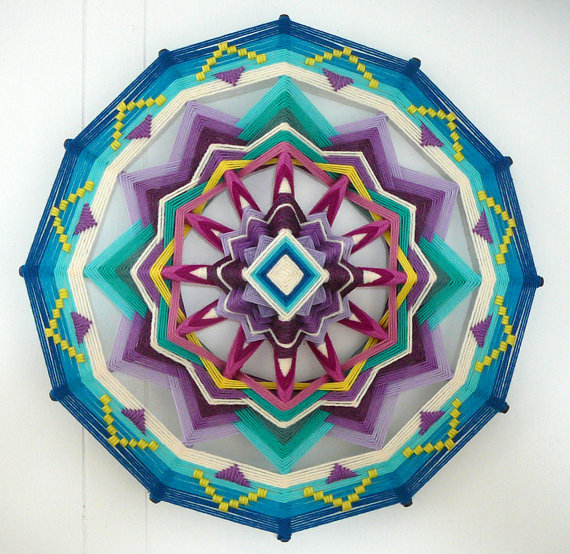
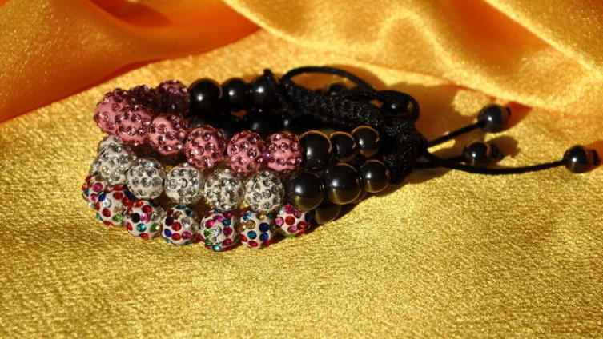
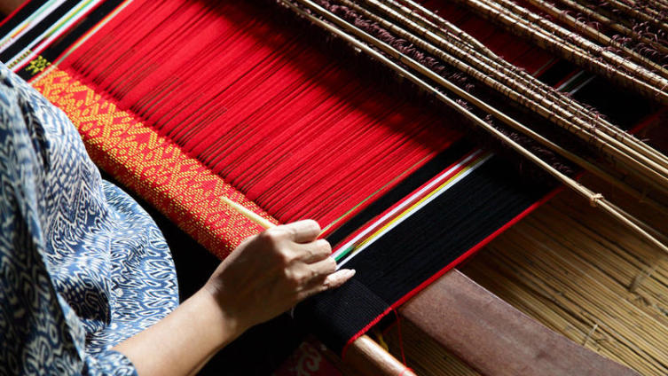

<div class="main">
  <ul class="articles">
    <li class="big_shadow">
      <span class="banner">Weaving</span>
      
      <a class="fa fa-dot-circle-o fa-lg" href="article.html"> DIY mandala</a>
      <p>Mandala weaving is an exciting experience. How to make a mandala with your own hands? In this article, the author will share the experience of weaving the very first mandala.</p>
    </li>
    <li class="big_shadow">
      <span class="banner">Embroidery</span>
      
      <a class="fa fa-dot-circle-o fa-lg" href="http://shkolazhizni.ru/archive/0/n-71814/"> How to embroider a carpet?</a>
      <p>Over the long years of our past, carpet on the floor and on the wall has been a constant, mandatory “trend” and an attribute of almost every room of every house. Large and small, with flowers, animals or ornaments, for every taste - within the store assortment. But in some houses, often rural, one could find unique carpets - hand-embroidered carpets.</p>
    </li>
    <li class="big_shadow">
      <span class="banner">Embroidery</span>
      
      <a class="fa fa-dot-circle-o fa-lg" href="http://shkolazhizni.ru/archive/0/n-71142/"> What is attractive in embroidery?</a>
      <p>Embroidery is one of the ancient handicrafts. This type of needlework was widely popular in various periods of our history. But now, it attracts the attention of many, regardless of age, gender and profession. Embroidery can be both professional and “home”. So what is the secret of its popularity?</p>
    </li>
    <li class="big_shadow">
      <span class="banner">Weaving</span>
      
      <a class="fa fa-dot-circle-o fa-lg" href="http://shkolazhizni.ru/archive/0/n-70504/"> How to make Shambhala?</a>
      <p>The popularity of the Shambhala bracelet is growing day by day: just a few months ago, jewelry flooded Europe, and today, girls whose wrists are decorated with such a bracelet can be found anywhere in the world.</p>
    </li>
    <li class="big_shadow">
      <span class="banner">Modeling</span>
      
      <a class="fa fa-dot-circle-o fa-lg" href="http://shkolazhizni.ru/archive/0/n-70541/"> Where to begin? Polymer clay for beginners.</a>
      <p>Polymer clay is today perhaps the most popular material for creativity. It won the love of needlewomen quite deservedly, because from it you can craft a lot of gizmos - from jewelry and souvenirs to interior items and utensils. I invite you to join the ranks of polymer clay sculptors. A few of my tips will help you.</p>
    </li>
    <li class="big_shadow">
      <span class="banner">Sundries</span>
      
      <a class="fa fa-dot-circle-o fa-lg" href="http://shkolazhizni.ru/archive/0/n-69345/"> How to make a photo collage for a family album?</a>
      <p>A collage of photos can be used for various purposes. First, you can decorate your family photo album with it. The second - you can arrange your work in a frame and give it to relatives or friends during the celebration of a solemn event, whether it be a wedding or an anniversary. The main thing in creating such a gift is the desire to surprise and please the recipient, a good mood and imagination.</p>
    </li>
    <li class="big_shadow">
      <span class="banner">Quilling</span>
      
      <a class="fa fa-dot-circle-o fa-lg" href="http://shkolazhizni.ru/archive/0/n-69134/"> What is quilling?</a>
      <p>Quilling - the art of obtaining a variety of compositions from multi-colored thin paper ribbons. Create, admire, admire, be inspired and inspire others with your work! Indeed, in quilling, the main thing is to let go of thoughts and let your imagination go on a fabulous flight.</p>
    </li>
    <li class="big_shadow">
      <span class="banner">Weaving</span>
      
      <a class="fa fa-dot-circle-o fa-lg" href="http://shkolazhizni.ru/archive/0/n-69043/"> To weave or not to weave? That is the question!</a>
      <p>Caution, the article is dangerous. Because of it, you can seriously get carried away, and then in six months you will climb the forests in search of uprooted trees to make a real durable loom and weave real towels with a branded pattern on it or something else.</p>
    </li>
    <li class="big_shadow">
      <span class="banner">Sundries</span>
      
      <a class="fa fa-dot-circle-o fa-lg" href="http://shkolazhizni.ru/archive/0/n-60039/"> How to make a DIY gift?</a>
      <p>On holidays, and not only want to please their friends and relatives with some pleasant gifts. And everyone probably knows that the best gift is a handmade gift (a small cute toy, flowers, and much more).</p>
    </li>
    <li class="big_shadow">
      <span class="banner">Sundries</span>
      
      <a class="fa fa-dot-circle-o fa-lg" href="http://shkolazhizni.ru/archive/0/n-56441/"> Oshibana - the art of samurai. Why is it interesting?</a>
      <p>Oshibana - painting with plants, pressed floristry - a very exciting and useful activity. Several centuries ago, only samurai owned this art. Compiling paintings from dried plant materials helps to achieve peace of mind, gain self-confidence, learn to comprehend the harmony and wisdom of Nature.</p>
    </li>
  </ul>

</div>
